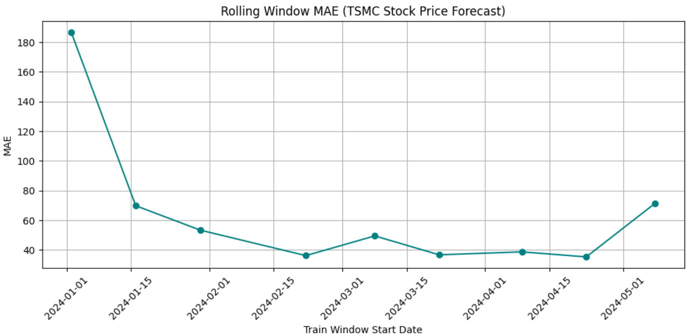

專案背景
在這個專案中，我們爬蟲yfinance上的股票資料(這裡用台積電股票為例)，並呈現一天、一周以及一個月的收盤紀錄，再以一年份的資料使用prophet model進行預測。
方法介紹
這裡我們使用github action幫我們處理後端(python)，並同步到github page呈現到前端(html)上。
Note: 這個網頁並非即時更新，這是為了避免github action的流量問題，因此我刻意設置為台灣時間18:00自動更新，除非我手動更新，不然可能看不到當天資訊。
Prophet Model 介紹
1. 模型函數:
- 模型是: y(t) = g(t) + s(t) + h(t) + εₜ，其實就是一個加法的回歸，它將時間序列分成3個部分:
- a. g(t)是一個趨勢函數，用來模擬非規律的變化；分為"分段線性模型"與"邏輯成長模型(非線性)"，預設為前者；
- b. s(t)是一個季節性(週期)函數，用來模擬每一季的變化；它是一個Furior Expansion，用來控制季節的靈活性；
- c. h(t)是一個假日函數，用來模擬不規則日成的影響；它是一個Indicator Function，這是為了要幫Furior Expansion處理突然發生的問題。
- d. εₜ 是一個誤差項，假設是一個時間序列的常態分配。
- Remark: 總而言之，我們用g(t)模擬非週期的變化(長期)、用s(t)來模擬周期的變化、h(t)來模擬突然出現的影響。
2. 參數設置:
- a. daily_seasonality=Flase :忽略每一天的變化，因為我們只是要預測收盤價，不用像便利商店那種要預測每個時段的業績(日季節性)；
- b. weekly_seasonality=Flase :數據重複每周的模式，我們用一個Forior Expansion模擬它，越高階就越複雜(在某一天波動大的時候)，預設是fourier_order=3；
- c. yearly_seasonality=True :數據重複每年的模式，比如: 逢年過節、淡旺季之類的，預設是fourier_order=10；
- d. interval_width=0.95 :預測值的信賴區間；
- e. changepoint_prior_scale=0.05 :控制changepoint(轉折點)的靈敏度，越大對歷史數據越敏感，但也可能overfit、越小越平坦，但可能抓不到一些突變；
- f. seasonality_mode='multiplicative' :將季節性和節假日效設為乘法模式。
- g. holidays=tw_holidays :加入國定假日，避免模型去擬合國定假日。
- Note: fourier_order越大會越能抓到複雜的訊息，但太大仍會overfit，因此可以用滑動窗口（Rolling Window）進行交叉驗證，以RMSE挑小最好的模型。
拆分數據: Rolling Window(滑動視窗)
這裡使用Rolling Window的方法拆分data，window意思是train data，horizon: 滑動間隔(天)，step :預測的時間範圍(天)，都設定20天，是為了避免"Test data"重疊。
Note:
- 1. horizon越少(5-10)，預測頻率越高(因為越頻繁加一點點train data)，適合短期，反之適合長期(20-30)。
- 2. step 其實就是每次交叉驗證隔了幾天，所以不能太小，太過重複loss會變很高。
模型評估
用train data (window_size=200)訓練模型後，test data 就是 296(原始data) - 200 = 96 (test_data)，每10天驗證一次，所以會有9個MAE:

MAE Loss
解釋:
- 這個 MAE Loss 一開始很大，但加入更多train data逐步減少。 計算誤差比例(Percentage Error): 最大為14.16%，MAPE(Mean Absolute Percentage Error)為7.4%，基本上觀察中長期應該還行。
問題與處理方案:
- 1. 模型冷啟動:
- 一開始數據不夠多，所以MAE大，我的window_size一開始設定200是避免test data太少；另外也可以看看當時有沒有發生什麼極端事件?
- 2. 後期較穩定:
- 數據累積變多、季度週期性的出現(法說會等等)有助於穩定這些變化。另外，changepoint_prior_scale參數也有助於將季節性的改變強度穩定。
結論
這個專案，展示了如何爬蟲與製作一個網頁，並且發佈；同時我們使用 Rolling Window 處理時間序列的資料，以 Prophet Model預測將來的趨勢。